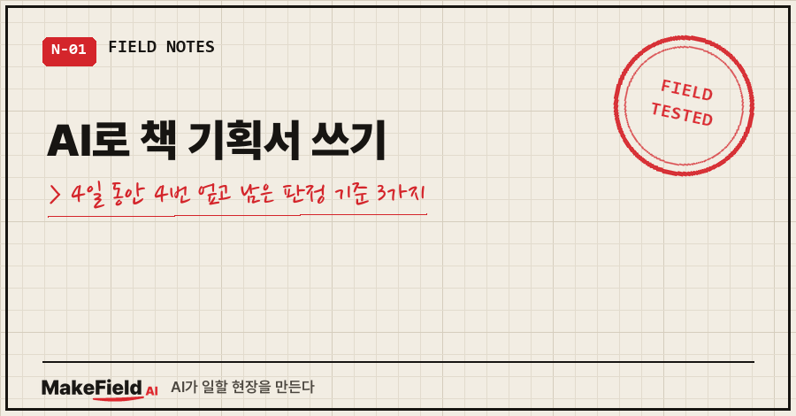
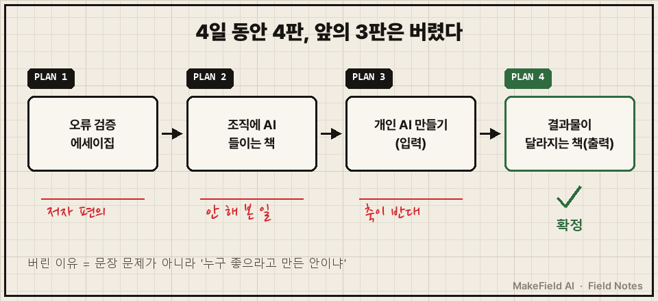
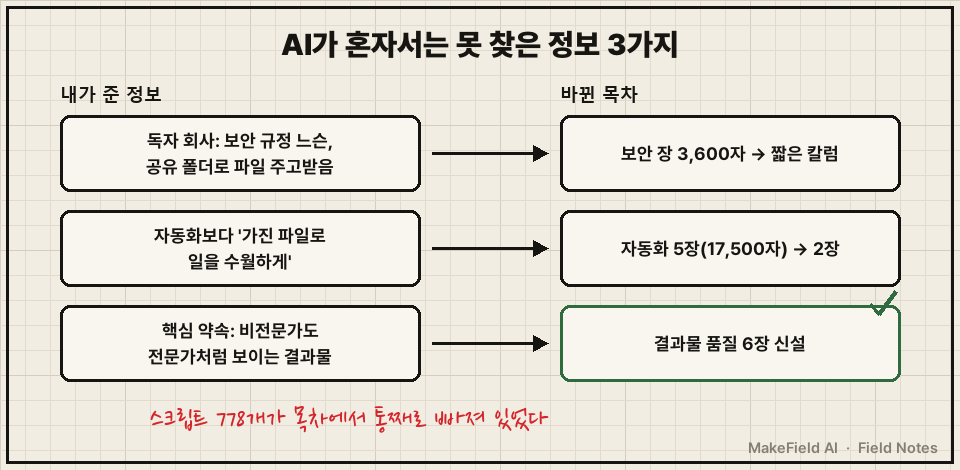
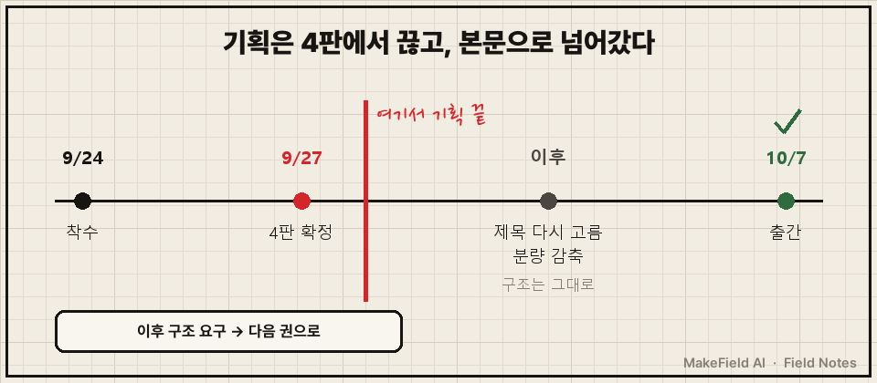

AI로 책 기획서 쓰기를 해 보면 그럴듯한 안이 끝도 없이 나와요. 문제는 그게 매번 그럴듯하다는 거예요.
저는 2026년 9월 24일부터 27일까지 나흘 동안 AI와 책 기획서를 4판 만들었고, 앞의 3판은 전부 버렸습니다.
결론부터 적을게요. AI가 낸 책 기획안은 ①독자에게 좋은 건지 저자에게 편한 건지 ②저자가 실제로 겪은 일과 맞는지 ③독자가 손에 쥘 결과(출력)를 약속하는지, 이 세 가지로 걸러야 해요. 제가 버린 3판이 정확히 이 셋에 하나씩 걸려 떨어졌거든요.
저는 산업 설비 제어 시스템을 15년 넘게 설계해 온 엔지니어예요. 퇴근하고 나면 AI한테 말로 시켜서 개인 자동화를 만들고, 그 기록을 모아 첫 책까지 냈어요. 이 글은 그 책의 기획 단계에서 나흘을 헛돈 이야기입니다.
1. "잘되든 말든 하나 내자"로 시작했어요
시작은 제 이 한마디였어요.
이제 책을 써야할거같다. 일단 잘되든말든 발간 하나 하자재료는 넉넉해 보였어요. AI가 직접 세어 보니 그동안 써 둔 글이 108편, 42만 6천여 자(원고지 2,132매)였거든요. 단행본 몇 권은 나올 분량이었죠.
그래서 기획서도 술술 나왔어요.
1판, 2판, 3판..
나올 때마다 그럴듯했고, 나올 때마다 틀린 이유가 하나씩 있었어요.

2. AI 책 기획 1~3판, 왜 버렸나요?
세 판 모두 문장은 멀쩡했어요. 걸린 건 "누구 좋으라고 만든 안이냐"였어요. 표로 정리하면 이래요.
| 판 | 기획 방향 | 버린 이유 |
|---|---|---|
| 1판 | AI 오류 검증 에세이집 | 장점이 "이미 다 써 놨다"(신규 집필 10%, 4주면 발간)뿐. 저자 편의지 독자 가치가 아님 |
| 2판 | 중소기업 조직에 AI를 들이는 책 | 독자가 좁고 구매에 예산·품의·보안 검토가 걸림. 저는 조직에 깔아 준 적이 없음. 사례 주인공이 가상 인물 |
| 3판 | 회사원이 자기 일을 아는 AI 만들기 | 축이 입력("AI에게 내 지식을 가르친다"). 독자가 궁금한 건 출력 |
| 4판 | 결과물이 달라지는 책(출력 중심) | 확정 |
1판은 "만들기 쉬운 안"이었어요. 새로 쓸 게 10%뿐이고 4주면 낸다니 솔깃하죠. 그런데 그건 제 사정이지, 독자가 돈 내고 살 이유는 아니었어요.
2판은 "제가 안 해 본 일"이었어요. 조직 구축서는 시장이 커 보였지만, 저는 회사에 AI를 깔아 준 사람이 아니라 혼자 만들어 쓴 사람이에요. 그러다 보니 책을 관통하는 사례가 가상 인물 '김 과장'으로 채워졌어요. 1년 동안 실제로 잰 숫자가 있는데, 그걸 지어낸 사람 입으로 말하게 된 거죠.
3판은 방향이 반대였어요. "AI에게 내 지식을 가르친다"는 입력 이야기였거든요. 읽다가 제가 짚었어요. 독자가 궁금한 건 가르치는 과정이 아니라 "그래서 내 결과물이 어떻게 달라지냐"라고요.
여러분이 AI랑 만든 기획서에도 혹시 가상 인물이 주인공으로 서 있지 않나요?
3. AI가 혼자서는 못 찾은 정보 3가지
3판에서 4판으로 넘어갈 때 목차가 크게 움직였어요. 계기는 AI가 아니라 제가 준 정보 세 개였어요. AI가 작업 기록에 "내가 추측할 수 없었던 3가지"라고 적어 둔 것들이에요.

- 제가 생각한 독자들의 회사는 보안 규정이 촘촘하지 않고, 파일을 공유 폴더로 주고받아요. → 대기업 기준으로 잡았던 보안 장 3,600자를 짧은 칼럼으로 줄였어요.
- 독자가 원하는 건 자동화보다 "가진 파일로 일을 수월하게"예요. → 자동화 5장, 17,500자를 2장으로 줄였어요.
- 책의 핵심 약속은 "비전문가도 전문가처럼 보이는 결과물"이에요. → 결과물 품질을 다루는 부를 6장짜리로 새로 만들었어요.
3번이 제일 아팠어요. 저한테는 문서를 만들어 주는 스크립트가 778개나 있었는데, 3판 목차에는 그게 통째로 빠져 있었거든요. 1년 동안 제일 많이 만든 게 그건데요..
AI는 제 폴더에 있는 파일은 셀 수 있어도, 독자 회사의 분위기나 제가 독자한테 하고 싶은 약속은 몰라요. 그건 제가 말해 줘야 기획서에 들어가는 정보였어요.
4. AI 책 기획안 걸러내는 체크리스트
이번에 쓴 기준을 표로 남겨 둘게요. 다음 기획 때 그대로 꺼내 쓰려고요.
| 물어볼 것 | 걸리면 보이는 신호 | 제 경우 |
|---|---|---|
| 독자 가치인가, 저자 편의인가 | 장점이 "빨리·쉽게 낸다"뿐 | 1판 |
| 내가 실제로 겪은 일인가 | 사례 주인공이 가상 인물 | 2판 |
| 독자가 얻을 결과(출력)를 약속하나 | 목차가 "AI에게 가르치는 과정" 위주 | 3판 |
| AI가 모르는 정보를 넣었나 | 독자 환경을 대기업 기준으로 가정 | 3판 → 4판 |
4판을 확정하면서 쓰는 규칙도 몇 개 같이 정했어요.
- 장마다 글자수 상한은 없앴어요. 기준은 "이 장만 읽고 따라 할 수 있는가" 하나예요.
- 처음부터 다 읽을 필요 없는 레퍼런스형으로 짜고, 증상별 찾아보기를 붙였어요.
- 넣고 싶은 게 생기면 "이건 다음 권에서"로 덜어냈어요. 후속 권 계획은 더 넣는 핑계가 아니라 1권을 덜어내는 칼로만 쓰기로요.
- 경쟁서 7권 목차를 직접 확인했고, 각 장에 넣을 실패 사례 44건이 전부 실제 기록에 있는지 대조했어요. 실존 100%, 중복 0건이었어요.
5. 기획 말고 엉뚱한 데서 터진 실수 하나
나흘 사이 가제가 4번 바뀌면서, 작업 메모 파일 이름도 제목 따라 4번 바꿨어요. 그러다 옛 판 메모 파일 하나를 지워 버렸어요. 지우지 말고 보류 폴더로 옮기는 게 제 규칙인데도요.
바로 복원은 했지만, 그 뒤로는 작업 파일 이름을 제목과 상관없이 고정했어요. 제목은 또 바뀔 수 있으니까요.
실제로 또 바뀌었어요. 4판 확정 며칠 뒤 제목 후보 36개를 놓고 다시 골라서 지금 제목이 됐고, 분량도 크게 깎았거든요. 쪽수를 줄인 얘기는 부크크 최소정가 계산법 글에 따로 적었어요.
다행히 기획 구조는 4판에서 더 움직이지 않았어요. 처음 12월 17일로 박아 뒀던 출간은 10월 7일로 당겨졌고요.
나흘째 작업 기록 맨 끝에는 이렇게 적혀 있어요.
⚠ 최대 리스크
기획 재변경. 4일 4판으로 끝. 이후 구조 요구는 2권으로 이관한다.
다음 산출물은 기획서가 아니라 본문이어야 한다.
기획 단계에서 남는 질문 두 개
Q. AI가 써 준 기획서는 버리고 처음부터 직접 쓰는 게 낫나요?
저는 버리지 않고 판을 계속 돌리는 쪽이 나았어요. 버린 3판마다 이유가 한 줄씩 남아서, 그게 그대로 4판의 거름망이 됐거든요. 대신 판을 버릴 때마다 "왜 버리는지"를 꼭 적어 두세요.
Q. 기획은 몇 판까지 돌려야 하나요?
정답은 없지만 끝나는 날은 미리 정하는 게 좋아요. 저는 4판에서 끊고 이후 구조 요구는 다음 권으로 넘겼어요. 기획서를 고치는 동안에는 본문이 한 줄도 늘지 않으니까요.
AI로 책 기획서 쓰기를 해 보니, AI는 기획서를 몇 판이든 그럴듯하게 써 줘요. 그중에 내 책을 고르는 건 결국 "독자에게 좋은가, 내가 겪은 일인가, 독자가 뭘 얻나" 세 질문이었어요.
AI로 문서와 기획을 만들면서 걸러 낸 기준들은 makefield.ai에도 차곡차곡 모아 두고 있습니다.
출처
- 사례: 2026-09-24~09-27 개인 출간 기획 작업 기록(기획 4판 변천·폐기 사유·실측값·작업 파일 삭제 사고), 2026-09-29 제목 연구·분량 감축 기록. 책 제목·가제 원문 제외
- 같은 책의 등록 과정: AI로 쓴 책 저작권, 부크크 'AI 사용' 칸 글
태그: #AI로책기획서쓰기 #AI책기획 #책기획서 #책기획서쓰는법 #책목차짜기 #자가출판 #부크크출간 #첫책쓰기 #책쓰기AI #생성형AI글쓰기 #AI글쓰기 #기획서작성 #AI협업 #AI오답노트 #MakeFieldAI